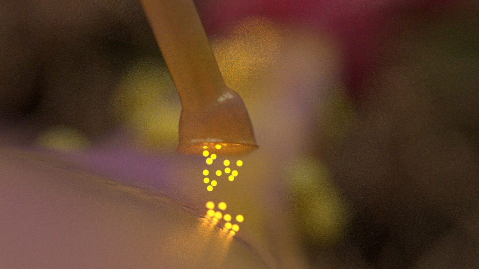

I was looking for better ways to remember information my freshman year of college, and I stumbled on the idea of a 'memory map'. People have been using them for millenia to remember information. I started by building out basic molecules in Unity3D, (really wish I had those screenshots, they were these super specular balls and sticks that you could use the first person prefab to jump around on.) I kept building these things, until one day I stumbled onto VR. I thought it was the perfect application of this idea. At this point, the idea of memory maps changed a bit, and me and my friend started building biological reconstructions of the human body for visualization in VR.
